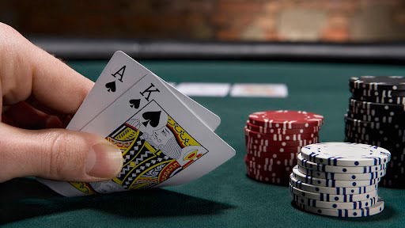

Blackjacks historia
|
Blackjack är ett av världens mest populära kortspel och har en lång och intressant historia som sträcker sig tillbaka till Europa under 1600-talet. Spelet har utvecklats över flera århundraden och gått från att vara ett enkelt salongsspel till att bli ett av de mest ikoniska casinospelen i världen. Idag spelas blackjack både i fysiska casinon och i digitala miljöer, där det fortsätter att locka spelare tack vare sin unika kombination av enkelhet, strategi och spänning. |
 |
|---|
Blackjacks skapande
Spelet tros ha utvecklats från det franska spelet “Vingt-et-Un”, vilket betyder “tjugoett”, och som blev särskilt populärt i Frankrike under 1700-talet. Redan då handlade spelet om att komma så nära summan 21 som möjligt utan att överstiga den, en grundidé som lever kvar än idag.
När spelet spreds till Nordamerika under 1800-talet började det förändras och anpassas. Namnet “Blackjack” uppstod i USA efter en särskild bonusutbetalning som gavs till spelare som fick en hand bestående av en ess och en svart knekt. Även om denna bonusregel så småningom försvann levde namnet kvar och blev det etablerade namnet på spelet.
Syftet bakom spelet
Blackjack skapades och utvecklades främst som ett underhållande hasardspel där både tur och strategi spelar en viktig roll. Till skillnad från många andra spel erbjuder det möjligheten för spelare att påverka sina chanser genom beslut och sannolikhetstänkande, vilket bidrog till dess ökande popularitet.
Spelets utveckling
Under 1900-talet växte spelet kraftigt i popularitet, särskilt i USA i samband med att kasinon blev lagliga i bland annat Nevada. Spelet standardiserades och fick den form som många känner igen idag. På 1960-talet började matematiker analysera spelet mer systematiskt, vilket ledde till utvecklingen av strategier som kunde förbättra spelarens odds. Detta i sin tur fick kasinon att justera vissa aspekter av spelet för att behålla sin fördel.
Med internets framväxt under slutet av 1900-talet tog Blackjack steget in i den digitala världen. Onlinekasinon gjorde spelet tillgängligt för en global publik, och senare utvecklades även liveversioner där spelare kan delta i realtid via videolänk. Idag finns spelet i många olika varianter, både fysiskt och digitalt.